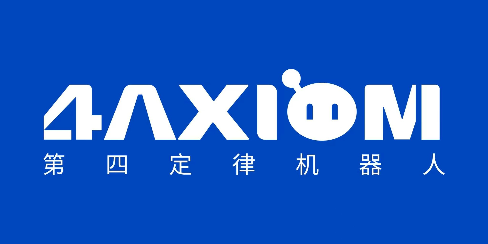

理解世界
连接视觉、语言与世界模型，理解物理环境、任务意图，以及行动可能带来的后果。

第四定律机器人从理解世界，到可靠行动，再到持续进化。
第四定律，让安全与成长成为具身智能的内在能力。
我们的长期目标，是让机器人理解行动的后果，从执行经验中学习，并通过验证持续改进，让每一次成长都成为下一次可靠行动的基础。
02 / Research direction
连接视觉、语言与世界模型，理解物理环境、任务意图，以及行动可能带来的后果。
让风险理解参与决策，在执行中识别偏差、主动修订，提升真实任务的完成能力。
从成功、失败与恢复中积累经验，通过学习与验证，逐步扩大机器人的可靠能力边界。
03 / About 4Axiom
合肥第四定律机器人有限公司，专注于面向真实世界的具身智能。创始团队汇聚大模型、机器人安全与端侧系统工程经验，推动安全递归自进化的研究与落地。
大模型研发与产品实践
机器人安全与机器学习研究
端侧智能与系统工程